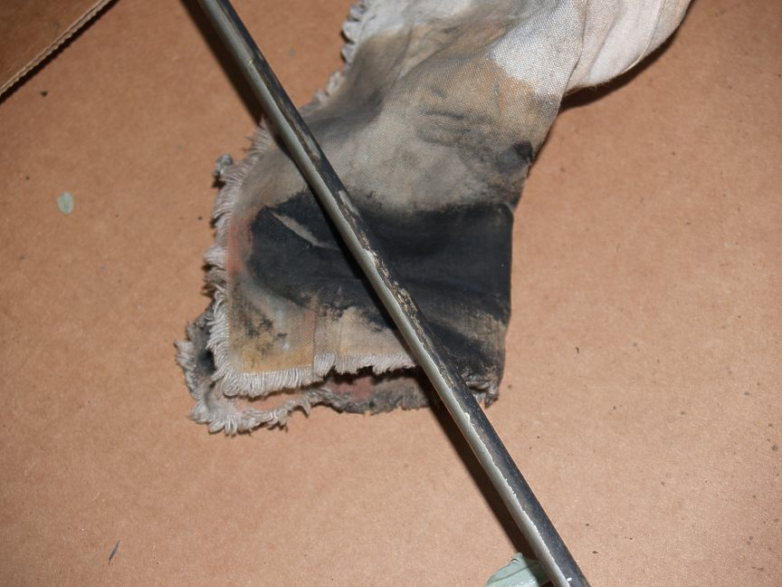
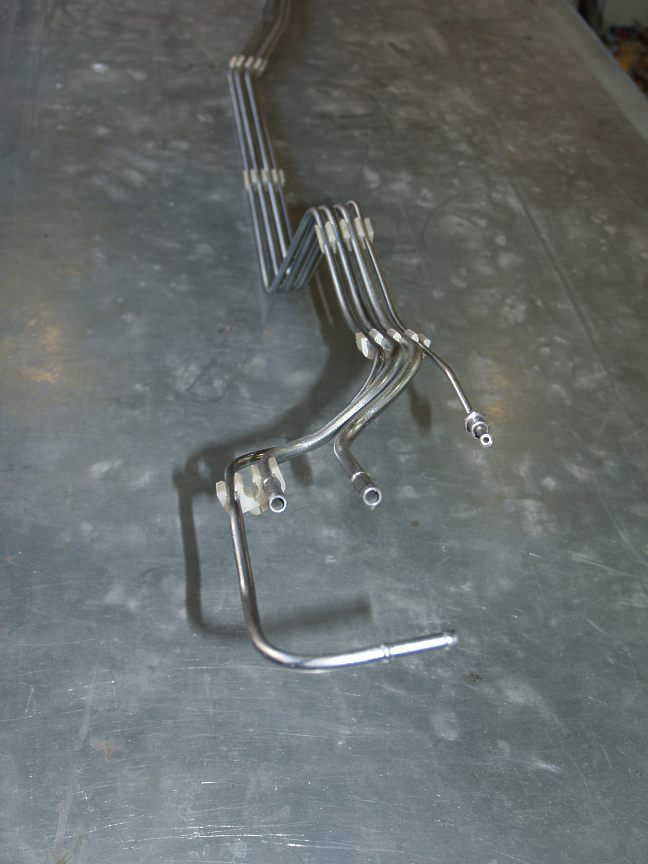

-
When I started this project it became obvious that no part should go untouched.
This is the process I used to return the hard fuel lines to a like new condition.
I've been told by one of the board members that these fuel lines are constructed
from aluminized steel tubing with a vinyl coating.
This is what I was confronted with after removing the engine.
The fuel line's protective coating had been eaten away by battery acid and rust
was starting to do its dirty deed … not to mention years of oily road grim.
Nasty!
After removing the lines, a HD photo map was made for reference.
Tools were gathered and a drawing made to record the location of the plastic tie-blocks.
I used the heat gun to warm the blocks to facilitate their removal.
Over time they can become hard and easily broken at their thinnest cross-section.
Each of the lines were throughly cleaned with a rag and acetone.

Here is a trick to help stabilize the opposite end of where work is being done.
Before restoration.
After sanding with 150 grit paper and finishing with course 3M abrasive pad.
Wire hooks were made from coat hangers. The straight end was bent in a crinkle
pattern and used to anchor the hook when it was shoved into the tubing.
The lines where hung from chains in the shop
Spray guns:
• Auarita MINI ST-3000 for paint products.
• Iwata LPH-50 for the metallic coating.
The first coating applied was Triangle Coating's two part
The primer was lightly 'de-glossed' with a fine 3M abrasive pad and
a coat of black high gloss black acrylic urethane was applied to seal the primer.
Prior to painting I did a spray out on a galvanized metal panel to sample different
metallic aerosol paints I've purchased for this restoration project.
After the spray out was done, the panel was divided into thirds.
The left side was coated with a waterbase flat acrylic, the right side
with a high gloss automotive two part acrylic and the center left bare
showing the native sprayed appearance.
• Eastwood Tank Tone
• Eastwood Cast Steel
• VHT 500° Cast Aluminum
• VHT 500° Cast Iron
• VHT 1600° Silver
• PlastiKote High Temperature Alunium
• Alsa Mirrachrome
• Rustoleum Aluminum
• Rustoleum Gold
I chose to use Alsa's Mirrachrome as it had the best metal surface look.
This is an interesting coating. It is made from small particle size leafing
aluminum, a light lacquer type binder and fast evaporating isopropyl alcohol
as a reducer. The Iwata LPH-50 was purchased to spray this product as it
produces a very fine spray droplet which is ideal for the Mirrachrome.
My second choice would have been VHT's 500°F Cast Aluminum if I didn't
have the Mirrachrome.
I allowed each coating to dry over night and followed the manufacturer's
user instructions.
The finished product with tie-blocks and new stainless steel hard brake line.

This was an easy project and went without a hitch.
-
Aww man, you mean you hand sanded the entire lengths?
I was hoping you had a slick method for removing the vinyl. ¯(°_o)/¯
Just kidding Gary, those look amazing and fantastic. Also a really excellent
comparison of what metallic coatings look when clear coated.
I used a discontinued Duplicolor DH1606 Ceramic Aluminum on my
84T motor and made the mistake of clear coating it. It turned a dull gray.
I used the VHT cast aluminum& cast iron on my last SS motor and left it uncoated.
Did you clear coat the lines and if so, does that adequately protect the base
from fuel and oil.
84 AE/Shiro #683/Shiro #820/84 Turbo -
I hate to say it but gary, what you should have done is bought "cunifer" brake lines in rolls and bent up new lines from it, it's easier to work than the old steel (i.e. for flaring) and never rusts
Reading material: http://www.brakequip.com/pdf/ezibend_2.pdf
Purchase: https://www.belmetric.com/brake-lines-fittings-copper-nickel-alloy-brake-tubing-c-17_633.html -
Yes the lines were clear coated with aumotive two part acrylic urethane. ThreeZ_Karma;349194 wrote: Aww man, you mean you hand sanded the entire lengths?
I was hoping you had a slick method for removing the vinyl. ¯(°_o)/¯I did not sand off all the vinyl because I knew The Aquapoxy would adhere to it.
I only 150 sanded the bad spots which were mostly at the bends.
Z_Karma;349194 wrote: Did you clear coat the lines and if so, does that adequately protect the base
from fuel and oil.
seperate coats should protect from the elements. -
Cunifer, that is a new one to me.G-E;349196 wrote: I hate to say it but Gary, what you should have done is bought "cunifer" brake lines in rolls and bent up new lines from it, it's easier to work than the old steel (i.e. for flaring) and never rusts
I had Classictube do my lines. They did a perfect job. I bought all the tools and was about to buy the tubing and end fittings but said to my self, "Let the pros do it." I read all the posts on 'how-to' … ha … not for me.
I went halibut fishing in Alaska a couple years back. Ever see those guys at the docks process a 125 pound halibut? Man(!) or a trained gemnast? Some things for me are best left to those that know the how. As a mater of fact I have a guy in today installing a central vac. It would have taken me a week to do what he is doing in a day. -
Yea but often an expert just knows something you don't, while having suspect motivations, I've found more experts do bad jobs and hide behind your ignorance than amateurs who honestly say they don't know
That cunifer stuff is locally available at some of my shop suppliers, also called cupro, factory z31 lines are 5mm (3/16") … for all I know napa even sells it -
Personally and professionally*, I'd rather refinish the old ones than put a lot of time into rolling and straightening out long lengths of coiled tube into parallel lines then repeatably bend it so it looks uniform. I've tried it.G-E;349196 wrote: I hate to say it but gary, what you should have done is bought "cunifer" brake lines in rolls and bent up new lines from it, it's easier to work than the old steel (i.e. for flaring) and never rusts
Reading material: http://www.brakequip.com/pdf/ezibend_2.pdf
Purchase: https://www.belmetric.com/brake-lines-fittings-copper-nickel-alloy-brake-tubing-c-17_633.html
Additional costs include a decent tube bender that keeps the tubing from kinking, A tube cutter, a deburr tool then and beading tool. Easily over 250.00 in tooling.
* I do this kind of work professionally http://i.imgur.com/DtR6hYz.jpg with small diameter copper and brass tubing and have tried the coiled stock to save costs.
I'd consider the cunifer for short lengths.
It would work, but good luck making it look good and straight.
84 AE/Shiro #683/Shiro #820/84 Turbo -
Wow thanks for sharing this. That chrome product is bad ass. I'm assuming it doesn't come in premade spray cans. How much did it run you?My Build Thread -
Yes it comes in an aerosol can $40.862sik;349344 wrote: Wow thanks for sharing this. That chrome product is bad ass. I'm assuming it doesn't come in premade spray cans. How much did it run you?
It does not produce a true chrome appearance. It looks more like anodized aluminum.
It requires a special application process. Primer followed by a very high gloss black acrylic then the MirraChrome applied in several thin coats.
Watchhttp://www.youtube.com/watch?v=cmuNV9htHqE[/video]]. Followed with a gloss clear. I have been experimenting with the hope I can get a cast aluminum look.

Copyright © 2006–. All rights reserved. Privacy Policy